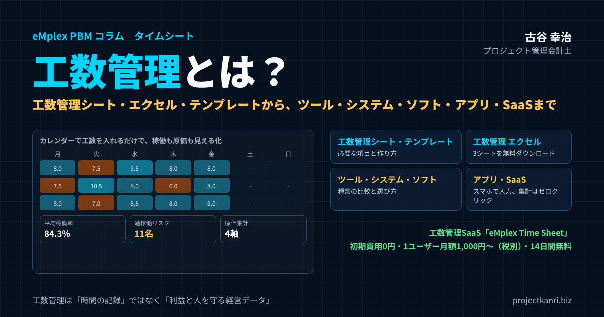

工数管理とは？工数管理シート・エクセルテンプレートの作り方から、工数管理ツール・システム・ソフト・アプリ・SaaSの選び方まで

結論：工数管理は「時間の記録」ではなく「利益と人を守るための経営データ」です
この記事の要点
- 工数管理とは：誰が、どの仕事に、どれだけの時間を使ったかを記録し、原価・稼働・見積りに生かすこと
- 入力ルール：毎日・15〜30分単位・社内業務もコード化・上長承認と月末の締め
- 工数管理シート・テンプレート：リスト型で記録し、マスタから選ぶ。エクセルテンプレートを無料ダウンロード
- ツール・システム・ソフト・アプリ・SaaS：入力のしやすさ、原価・稼働の自動集計、承認と締めで選ぶ
- 工数管理SaaS：eMplex Time Sheetは1ユーザー月額1,000円〜・14日間無料
プロジェクト管理会計士の古谷です。今回は、プロジェクト型ビジネスの経営管理の土台である、工数管理を取り上げます。
システム開発、Web制作、コンサルティング、設計、広告制作。人が時間を使って価値を生み出すビジネスでは、原価の大部分は人件費です。そして、その人件費をプロジェクトごとに把握するための唯一の手段が、工数管理です。工数が分からなければ、どのプロジェクトが儲かっているのかも、誰に負荷が偏っているのかも、次の見積りをいくらにすべきかも分かりません。
ところが、多くの会社で、工数管理は「面倒な入力作業」と受け止められています。月末にまとめて記憶を頼りに入力する、入力しても誰も見ていない、集計はエクセルで担当者が半日がかり。これでは、工数のデータは経営に生かされません。
結論から申し上げます。工数管理は、単なる時間の記録ではなく、利益と人を守るための経営データです。正しく入力され、適時に集計され、原価と稼働の分析に使われて初めて、その価値を発揮します。そのためには、入力のルールと承認の仕組み、そして入力の手間を最小にする道具が欠かせません。
本稿では、工数管理とは何かという基本から、計算方法、進め方と入力ルール、工数管理シートやエクセルのテンプレートの作り方、工数管理ツール・システム・ソフト・アプリ・SaaSの選び方、工数データの活かし方までを順にお伝えします。記事の中で、そのまま使える工数管理シートのエクセルのテンプレートもダウンロードできます。
なお、本稿の後半では、私たちが提供している工数管理のSaaS「eMplex Time Sheet」の機能、特徴、料金もご紹介します。工数管理の考え方を知ったうえで、道具を選ぶ際の参考にしていただければ幸いです。
工数管理とは：誰が、どの仕事に、どれだけの時間を使ったかを管理すること
工数とは、ある仕事を行うのに必要な作業量を、人数と時間を掛け合わせて表したものです。たとえば、二人で三時間かかる作業の工数は、六時間、あるいは六人時と表します。
工数管理とは、社員一人ひとりが、どのプロジェクトや業務に、どれだけの時間を使ったかを記録し、集計して、管理に生かすことです。英語ではタイムシートやタイムトラッキングと呼ばれ、工数の記録そのものをタイムシートと呼ぶ会社も多くあります。
| 単位 | 意味 | 主な使われ方 |
|---|---|---|
| 人時（時間） | 1人が1時間に行う作業量 | 日々の工数の記録 |
| 人日 | 1人が1日に行う作業量 | 作業計画・小規模な見積り |
| 人月 | 1人が1か月に行う作業量 | システム開発などの見積り・要員計画 |
工数の単位には、人時、人日、人月などがあります。人日は一人が一日に働く作業量、人月は一人が一か月に働く作業量です。システム開発の見積りでは人月がよく使われますが、日々の工数管理では、時間単位、あるいは十五分や三十分単位で記録するのが一般的です。
工数管理には、二つの側面があります。一つは、実績の管理、つまり実際に使った時間の記録です。もう一つは、計画の管理、つまり、これからどのプロジェクトに誰を何時間割り当てるかという予定の管理です。予定の工数と実績の工数を比べることで、見積りの精度を確かめ、人の配置を見直すことができます。
工数管理は、製造業でも古くから行われてきました。製品一つを作るのに必要な作業時間を標準の工数として定め、実際の作業時間と比べて生産性を管理する考え方です。一方、プロジェクト型のビジネスでは、案件ごとに仕事の内容が異なるため、標準の工数を決めにくく、実際に使った時間を記録し、それを積み上げて原価や見積りの基準をつくっていくことが中心になります。
工数管理の目的：何のために工数を記録するのか
工数管理を定着させるためには、何のために工数を記録するのかを、経営から現場まで共有しておくことが大切です。工数管理の主な目的を整理します。
| 目的 | 分かること・できること |
|---|---|
| 原価の把握 | 工数×時間単価でプロジェクトの労務費が分かり、本当の採算が見える |
| 稼働と負荷の把握 | 負荷の偏り、仕事の割り当て不足に気づける |
| 見積り精度の向上 | 過去の実績工数を次の見積りの根拠にできる |
| 生産性の向上 | 会議・手戻りなど価値を生まない時間を把握し改善できる |
| 働き方の管理 | 長時間労働の兆候に早く気づける（監視が目的ではない） |
一つ目は、プロジェクトの原価を正しく把握することです。工数に時間あたりの単価を掛けたものが、そのプロジェクトの労務費になります。工数が分からなければ、労務費が分からず、プロジェクトの本当の採算は分かりません。
二つ目は、稼働と負荷を把握することです。誰が、どれだけの時間を、どの仕事に使っているかが分かれば、特定の人への負荷の偏りや、逆に仕事が割り当てられていない人に気づくことができます。
三つ目は、見積りの精度を上げることです。過去のプロジェクトで、どの作業にどれだけの工数がかかったのかという実績は、次の見積りの最も確かな根拠になります。
四つ目は、生産性の向上です。会議、資料作成、手戻りなど、価値を生まない時間がどれだけあるのかが分かれば、業務の改善の手がかりになります。
五つ目は、働き方の管理です。工数の記録は、長時間の労働の兆候に気づくきっかけにもなります。ただし、工数管理の目的は社員を監視することではありません。この点は、現場に誤解されないよう、繰り返し伝える必要があります。
工数管理はなぜ嫌われるのか：現場の本音に向き合う
工数管理の導入を進めようとすると、現場から反発の声が上がることが少なくありません。「入力が面倒」「何のためにやるのか分からない」「監視されているようで嫌だ」。こうした声には、それぞれ理由があります。
入力が面倒だという声の背景には、入力の手間が大きすぎる仕組みがあります。細かすぎる作業の区分、使いにくい入力の画面、毎日の入力に十分も二十分もかかる運用。これでは、忙しい現場が嫌がるのは当然です。
何のためにやるのか分からないという声の背景には、入力したデータが使われていないという現実があります。入力しても、その結果がどう使われたのかが現場に返ってこなければ、入力は意味のない作業に感じられます。
監視されているようで嫌だという声の背景には、工数のデータが、個人の評価や管理の強化に使われるのではないかという不安があります。実際に、工数の少ない社員を責めるような使い方をしている会社もあり、その不安は根拠のないものではありません。
工数管理を定着させるには、こうした本音に正面から向き合う必要があります。入力の手間を最小にし、データの使い道を示し、監視ではなく、プロジェクトと人を守るための仕組みであることを、経営自らが繰り返し伝えることです。
工数管理と勤怠管理の違い
工数管理と混同されやすいのが、勤怠管理です。二つは似ていますが、目的も記録する内容も異なります。
| 観点 | 勤怠管理 | 工数管理 |
|---|---|---|
| 記録すること | 出退勤の時刻、労働時間、休暇 | どの仕事に何時間使ったか |
| 主な目的 | 給与計算、労働時間の法令管理 | 原価・稼働・生産性・見積りの管理 |
| 単位 | 日・時間 | プロジェクト・作業区分×時間 |
| 両者の関係 | 労働時間の合計 | 合計が勤怠の時間と一致するのが理想 |
勤怠管理は、社員が何時に出社し、何時に退社し、何時間働いたかを記録するもので、給与の計算や労働時間の管理のために、法令に沿って行います。一方、工数管理は、その働いた時間を、どの仕事に使ったのかを記録するもので、原価や生産性の管理のために行います。
理想は、勤怠の労働時間と、工数の合計が一致していることです。勤怠では八時間働いたのに、工数は五時間分しか記録されていない、という状態では、残りの三時間がどこに使われたのかが分かりません。工数の合計と勤怠の時間を照らし合わせる仕組みがあれば、入力の漏れに気づくことができます。勤怠と工数のつなぎ方については、勤怠管理のコラムで詳しく解説しています。
勤怠管理のシステムをすでに導入している会社では、工数管理を別のツールで行う場合、勤怠と工数の二重の入力にならないよう注意が必要です。勤怠のデータを取り込む、あるいは工数のデータを出力して勤怠と照合するといった、データの連携の方法を確認しておきましょう。
工数の計算方法：工数から原価を求める
工数管理を原価の管理に生かすための計算方法を確認しておきます。
| 項目 | 計算式 | 例 |
|---|---|---|
| 時間単価 | 年間人件費÷年間のプロジェクト稼働可能時間 | 6,000円 |
| 労務費（工数原価） | 工数×時間単価 | 100時間×6,000円＝60万円 |
| 稼働率 | プロジェクトの工数÷所定労働時間 | 128時間÷160時間＝80% |
| 人月換算 | 工数（時間）÷1人月の時間 | 320時間÷160時間＝2人月 |
基本の式は、工数に時間あたりの単価を掛けて労務費を求めることです。時間あたりの単価は、社員の年間の人件費を、年間にプロジェクトに使える時間で割って求めます。人件費には、給与だけでなく、賞与、会社が負担する社会保険料、福利厚生費なども含めます。
たとえば、時間単価が六千円の社員が、あるプロジェクトに月に百時間を使えば、そのプロジェクトの労務費は六十万円です。同じプロジェクトに、時間単価が五千円の社員が八十時間を使えば四十万円で、合わせて百万円が、その月のそのプロジェクトの労務費になります。
稼働率は、所定の労働時間のうち、プロジェクトに使った時間の割合です。所定の労働時間が百六十時間で、プロジェクトに百二十八時間を使っていれば、稼働率は八十パーセントです。稼働率が高すぎれば過重な負荷の、低すぎれば仕事の割り当て不足の兆候です。
時間単価（コストレート）の決め方
工数を原価に換算するための時間単価、いわゆるコストレートの決め方は、工数管理を原価管理に生かすうえで重要な論点です。
時間単価は、年間の人件費を、年間にプロジェクトに使える時間で割って求めます。人件費には、給与、賞与、会社が負担する社会保険料、福利厚生費などを含めます。時間には、所定の労働時間から、社内の会議や教育など、プロジェクトに直接使わない時間を差し引いた時間を使うのが一般的です。
時間単価の設定の方法には、社員一人ひとりに設定する方法、役職や等級ごとに標準の単価を設定する方法、全社で一律の単価を使う方法があります。個人の給与が推測されることを避けるため、役職や等級ごとの標準の単価を使う会社が多くあります。
どの方法を選ぶにしても、少なくとも年に一度は、実際の人件費と比べて単価を見直してください。単価が実態より低ければ、すべてのプロジェクトの原価が低く見え、採算が実際より良く見えてしまいます。
工数管理の進め方：5つのステップ
工数管理を新たに始める、あるいは見直す際の進め方を、五つのステップで整理します。
| ステップ | 内容 |
|---|---|
| 1. 目的を決める | 原価把握・稼働管理・見積り精度など、何に使うかを決める |
| 2. 単位と区分 | プロジェクトコード、作業区分、社内業務コードを決める |
| 3. ルール | 入力の期限と単位、承認者、月末の締めを決める |
| 4. 道具 | エクセルか、工数管理ツール・SaaSかを選ぶ |
| 5. 集計と活用 | 原価・稼働率・見積り比較に使い、結果を現場に返す |
ステップ1は、目的を決めることです。原価の把握なのか、稼働の管理なのか、見積りの精度の向上なのか。目的によって、記録する粒度や項目が変わります。
ステップ2は、記録する単位と区分を決めることです。プロジェクトのコード、作業の区分、社内の業務のコードを決めます。区分を細かくしすぎると入力の負担が増え、粗すぎると分析に使えません。最初は少なめに始め、必要に応じて増やすのが現実的です。
ステップ3は、入力と承認のルールを決めることです。いつまでに、どの単位で入力するのか、誰が承認するのか、月末の締めはいつかを決めます。
ステップ4は、道具を選ぶことです。エクセルで始めるのか、工数管理のツールやSaaSを使うのかを、人数と目的に応じて選びます。
ステップ5は、集計して使うことです。工数のデータを、プロジェクトの原価、稼働率、見積りとの比較に使い、その結果を現場に返します。入力したデータが使われていると実感できることが、工数管理を定着させる最大の要因です。
この五つのステップは、エクセルで始める場合も、ツールやSaaSを使う場合も同じです。特に、ステップ1から3の設計を飛ばして道具だけを導入すると、何のための入力なのかが分からないまま運用が始まり、定着しません。
工数入力のルール：正確なデータを集めるために
工数のデータの質は、入力のルールで決まります。私が支援先でお勧めしている基本のルールをまとめます。
| ルール | 内容 |
|---|---|
| 毎日入力する | 月末のまとめ入力は記憶が曖昧になり、実態と離れる |
| 15〜30分単位 | 細かすぎず粗すぎない単位で記録する |
| 社内業務もコード化 | 会議・教育・提案・営業支援も記録し、稼働率を分析できるようにする |
| 作業区分を選ぶ | 設計・製造・テストなど、少なめの区分から始める |
| 上長が承認する | 週次または月次で確認し、負荷や困りごとにも気づく |
| 月末に締める | 締め後は変更できないようにし、原価を確定させる |
最も大切なのは、毎日入力することです。月末にまとめて入力すると、記憶が曖昧になり、どのプロジェクトに何時間使ったかを正確に思い出せません。結果として、予定どおりの時間を均等に割り振っただけの、実態と離れた数字になってしまいます。一日の終わりに数分で入力できる仕組みをつくることが、正確な工数管理の第一歩です。
入力の単位は、十五分か三十分が現実的です。一分単位で記録しようとすると負担が大きく、一時間単位では細かな作業が埋もれてしまいます。
社内の業務、たとえば会議、教育、提案の準備、営業の支援なども、コードを付けて記録します。プロジェクトの工数だけを記録していると、残りの時間がどこに使われたのかが分からず、稼働率の分析もできません。
そして、上長が承認し、月末に締めることです。承認と締めがなければ、工数はいつまでも変更でき、原価の数字が確定しません。上長が部下の工数を確認する過程は、部下の負荷や困りごとに気づく機会にもなります。
作業区分の設計：細かすぎず、粗すぎず
工数管理の設計で意外と悩むのが、作業の区分をどこまで細かくするかです。区分が細かいほど、詳しい分析ができますが、入力の負担は増え、入力の誤りも増えます。区分が粗すぎると、入力は楽ですが、分析に使えません。
私がお勧めしているのは、分析で使う目的から逆算して区分を決めることです。たとえば、システム開発で工程ごとの見積りの精度を高めたいなら、要件定義、設計、製造、テスト、管理といった工程の区分が必要です。単にプロジェクトの原価を知りたいだけなら、プロジェクトのコードだけで十分かもしれません。
区分の数の目安は、一つのプロジェクトについて五つから十程度です。それ以上に細かくすると、社員は区分を選ぶのに迷い、適当な区分を選ぶようになります。分析と入力の負担のバランスを考え、運用しながら見直していくことが大切です。
区分の名前は、誰が見ても同じ意味に理解できるものにしてください。「その他」のような区分を作ると、多くの工数がそこに集まり、分析に使えなくなります。どうしても必要な場合は、使う場面を限定し、その割合を定期的に確認します。
予定工数（アサイン）と実績工数を比べる
工数管理を一歩進めるのが、予定の工数と実績の工数の管理です。予定の工数とは、これから、誰を、どのプロジェクトに、どれだけの時間、あるいは人月を割り当てるかという計画で、アサインとも呼ばれます。
予定の工数を管理すると、来月以降、誰の手が空いていて、誰が手一杯なのかが分かります。新しい案件を受注できるかどうか、採用や外注が必要かどうかを、事前に判断できるようになります。予定の工数がゼロ、あるいは極端に少ない社員がいれば、仕事の割り当ての抜けに早く気づけます。
そして、予定と実績を比べることで、計画の精度を確かめることができます。予定より実績が大きく上回っているプロジェクトは、見積りや計画に問題があったのかもしれません。予定より実績が少ない社員は、別の業務に時間を取られているのかもしれません。予定と実績の差は、プロジェクトと人の両方の状況を映す鏡です。
予定の工数は、月に一度、プロジェクトマネージャーや部門長が見直すのが現実的です。人月の単位で、0.5人月、1.0人月といった粒度で計画し、実績の工数と並べて確認します。
工数管理シート・テンプレートの作り方：必要な項目
工数管理を始めるときに、まず必要になるのが工数管理シートです。紙でもエクセルでも、工数管理のテンプレートに入れておきたい項目は共通しています。
| 項目 | ポイント |
|---|---|
| 日付 | 日ごとに記録する |
| 社員（コード・氏名・部門） | マスタから選択し、表記の揺れを防ぐ |
| プロジェクトコード・名称 | 社内業務のコードも含めてマスタから選択 |
| 作業区分 | 設計・製造・会議など、分析に使う区分 |
| 時間 | 15分（0.25時間）単位など、単位を統一 |
| 工数原価 | 時間×時間単価（マスタ）で自動計算 |
| メモ | 作業内容の補足（任意） |
工数管理シートの形式には、大きく二つの型があります。一つは、日付を横に、プロジェクトを縦に並べたマトリクスの型で、一人の社員の一か月の工数を一枚で見渡せます。もう一つは、日付、社員、プロジェクト、作業の区分、時間を一行ずつ記録していくリストの型です。
入力のしやすさではマトリクスの型が、集計のしやすさではリストの型が優れています。複数の社員の工数を集めて、プロジェクト別や社員別に集計するなら、リストの型をお勧めします。エクセルのピボットテーブルや、SUMIF関数などで簡単に集計できるからです。
テンプレートを作る際には、社員とプロジェクトのマスタを別のシートに分け、入力の欄はプルダウンから選べるようにしておくと、入力の誤りや表記の揺れを防げます。
なお、紙の工数管理シートや日報から始めている会社もあるでしょう。紙でも記録すること自体には意味がありますが、集計にはエクセルなどへの転記が必要になり、手間と誤りが増えます。可能であれば、最初からエクセルやツールに直接入力する形をお勧めします。
エクセルで工数管理を始める：テンプレートの使い方
工数管理は、エクセルで始めることができます。この記事では、そのまま使える工数管理シートのエクセルのテンプレートを用意しました。
📥 工数管理シート テンプレート（エクセル）をダウンロード
「工数入力シート」「工数集計」「マスタ」の3シート構成。社員とプロジェクトをプルダウンで選び、時間を入れると、工数原価・プロジェクト別集計・社員別の稼働率が自動で計算されます。数値は説明のための例です。
| シート | 内容 |
|---|---|
| 工数入力シート | 日付・社員・PJ・作業区分・時間を1行ずつ入力。氏名・PJ名・工数原価は自動表示 |
| 工数集計 | プロジェクト別の工数・原価・構成比、社員別の総工数・顧客案件と社内業務の内訳・稼働率・工数原価 |
| マスタ | 社員（時間単価・所定時間）とプロジェクト（区分）を登録 |
使い方は簡単です。まず「マスタ」のシートに、社員のコード、氏名、部門、時間あたりの単価、月の所定の時間と、プロジェクトのコード、名称、区分を登録します。次に「工数入力シート」に、日付、社員、プロジェクト、作業の区分、時間を一行ずつ入力します。氏名、プロジェクト名、工数の原価は自動で表示されます。
「工数集計」のシートでは、プロジェクト別の工数と原価、社員別の総工数と、顧客の案件と社内の業務の内訳、稼働率、工数の原価が自動で集計されます。テンプレートの例では、顧客の案件のコードを「PJ-」、社内の業務のコードを「IN-」で始めるルールにしており、この区別で稼働率を計算しています。
少人数のチームであれば、このテンプレートを共有のフォルダに置き、各自が入力する形でも運用できます。ただし、人数が増えてくると、後で述べるような限界が見えてきます。
エクセルによる工数管理の限界
エクセルの工数管理シートは手軽ですが、人数やプロジェクトの数が増えると、次のような限界にぶつかります。
| 限界 | 起きること |
|---|---|
| 集計の手間 | 社員ごとのファイルを集めて統合する作業が毎月発生 |
| 入力ミス・形式の揺れ | 数式の破損、表記揺れ、古いファイルの使用 |
| 承認と締め | 誰がいつ承認したか、締め後の変更を管理できない |
| リアルタイム性 | 月の途中で予算超過や負荷の偏りに気づけない |
| スマホ入力 | 外出先や現場からの入力がしにくい |
最も大きいのは、集計の手間です。社員ごとに別のファイルで入力している場合、月末にそれを集めて一つにまとめる作業が発生します。ファイルの形式が微妙に違う、提出が遅れる、集計の途中で数式が壊れる。私が見てきた会社でも、工数の集計だけで、管理部門の担当者が毎月半日から数日を費やしているケースは珍しくありませんでした。
次に、承認と締めの管理です。エクセルでは、誰がいつ承認したのか、締めた後に数字が変更されていないかを管理することが困難です。上場の準備や内部統制の観点からも、工数の記録の信頼性を示すのは難しくなります。
そして、リアルタイム性です。エクセルの工数は、月末に集計して初めて全体が分かります。月の途中で、プロジェクトの工数が予算を超えそうだ、特定の人の負荷が高すぎる、といったことに気づくことはできません。
目安として、工数を入力する社員が十名を超える、プロジェクトが常時十件を超える、集計に半日以上かかる、といった状況になれば、工数管理のツールやシステムへの移行を検討する時期です。
工数管理の導入はスモールスタートで
工数管理を全社で一斉に始めようとすると、ルールの調整や現場への説明に時間がかかり、反発も大きくなりがちです。まずは一つの部署やチームから、小さく始めることをお勧めします。
最初の一か月は、プロジェクトと社内の業務のコードを少なめに用意し、毎日の入力に慣れてもらうことに集中します。二か月目には、上長の承認と月末の締めを始め、三か月目には、集計の結果をチームに共有して、プロジェクトの原価や稼働率を一緒に確認します。
小さく始めて、うまくいったやり方を他の部署に広げていけば、現場の理解も得やすくなります。最初の部署で、工数のデータを使って見積りを改善できた、負荷の偏りを解消できたといった成功の事例ができれば、それが全社への展開の最大の説得材料になります。工数管理のSaaSの多くは、部署の単位での導入にも対応しています。
工数管理ツール・システム・ソフトの種類と比較
工数管理に使える道具には、いくつかの種類があります。名前は、工数管理ツール、工数管理システム、工数管理ソフト、工数管理アプリ、工数管理SaaSとさまざまですが、機能や提供の形で整理すると、次のようになります。
| 種類 | 強み | 弱み・注意点 |
|---|---|---|
| エクセル・スプレッドシート | すぐ始められ、費用がかからない | 集計・承認・締めに限界 |
| 勤怠管理システムの工数機能 | 勤怠と一体で管理できる | 原価・稼働の分析は限定的なことが多い |
| プロジェクト管理ツール | タスク・スケジュール管理に強い | 時間単価による原価集計・締めは限定的 |
| 工数管理システム・SaaS | 入力・承認・締め・稼働分析・原価集計を一体で | 月額費用、業務への適合を確認 |
| ERP・プロジェクト管理会計システム | 工数を予算・外注費・売上と合わせてプロジェクト収支で管理 | 導入の範囲・費用が大きくなりやすい |
エクセルやスプレッドシートは、費用をかけずにすぐに始められますが、集計と承認に限界があります。勤怠管理のシステムの工数の機能は、勤怠と一体で管理できるのが強みですが、プロジェクトの原価や稼働の分析の機能は限られることが多いようです。
プロジェクト管理のツールは、タスクやスケジュールの管理を主な目的としており、作業時間の記録の機能を持つものもありますが、時間単価を掛けた原価の集計や、承認と締めの機能は限定的なことが一般的です。
工数管理に特化したシステムやSaaSは、工数の入力、承認と締め、稼働の分析、原価の集計を一つの基盤で行えるのが特徴です。工数を入力するだけで、プロジェクト別や部門別の原価、稼働率が自動で集計されるため、月末の集計の作業がほぼなくなります。
ERPやプロジェクト管理会計のシステムは、工数を、予算、外注費、経費、売上と合わせて、プロジェクトの収支として管理できます。工数管理だけでなく、プロジェクト収支管理まで一体で行いたい会社に向いています。
工数管理アプリ・SaaSのメリット：スマホで入力、集計はゼロクリック
近年は、工数管理をクラウドで提供するSaaSが主流になりつつあります。SaaSとは、ソフトウェアをインターネットを通じてサービスとして利用する形態で、自社でサーバーを用意する必要がありません。
| メリット | 注意点 |
|---|---|
| スマホ・タブレットから毎日数分で入力できる | 利用料が継続してかかる |
| 入力と同時にPJ別・社員別・部門別に自動集計 | 細かな作り込みには限界がある |
| 承認と締めで数字を確定・ロックできる | データの保管・セキュリティ体制の確認 |
| 初期費用を抑えて短期間で導入できる | 現場の入力のしやすさを試用で確認する |
工数管理のSaaSの最大のメリットは、入力の手間が減ることです。スマートフォンやタブレットのブラウザ、あるいはアプリから、移動中や現場からでも工数を入力できれば、月末のまとめ入力が減り、データの精度が上がります。カレンダーの画面で日付を選び、プロジェクトと時間を選ぶだけで入力できる工数管理アプリであれば、一日の入力は数分で済みます。
もう一つのメリットは、集計の手間がなくなることです。入力された工数は、その場でプロジェクト別、社員別、部門別に集計され、時間あたりの単価を掛けた原価も自動で計算されます。月末に担当者がエクセルで集計する作業は不要になります。
承認と締めの仕組みも、SaaSの強みです。上長が画面で部下の工数を確認して承認し、月末に締めれば、その後は数字が変更されないようにロックされます。誰が、いつ承認したのかの記録も残ります。
一方で、利用料が継続的にかかること、自社の業務に合わせた細かな作り込みには限界があること、データの保管とセキュリティの体制を確認する必要があることには注意が必要です。導入の前には、無料の試用の期間を使って、実際に現場の社員に入力してもらうことをお勧めします。
工数管理アプリを選ぶ際は、専用のアプリをインストールする形か、ブラウザで使う形かも確認しておきましょう。ブラウザで使える形であれば、会社の端末の管理の方針に左右されにくく、社員の私物のスマートフォンからの入力も、運用のルールさえ決めておけば始めやすくなります。
工数管理システムの選び方：チェックリスト
工数管理のシステムやSaaSを選ぶ際に確認したい項目を、チェックリストにまとめます。
| 観点 | 確認すること |
|---|---|
| 入力のしやすさ | カレンダー入力、スマホ対応、入力漏れに気づける表示 |
| 承認と締め | 上長承認、仮締め・本締め、締め後のロック |
| 原価の集計 | 時間単価を掛けた原価を、PJ別・部門別・社員別・得意先別に集計 |
| 稼働の分析 | 稼働率、過稼働・未配置の検知、アサイン計画 |
| マスタ管理 | 組織変更や単価改定を自社で更新できるか |
| 権限・統制 | ロール別の権限、操作ログ、バックアップ |
| 連携 | CSV・API等で勤怠・給与・会計・収支管理と連携できるか |
| 費用 | 1ユーザー月額、最低人数、初期費用、無料トライアル |
なかでも最も重要なのは、入力のしやすさです。どれほど高機能なシステムでも、現場の社員が入力しにくければ、工数のデータは集まりません。管理者の画面のデモだけで判断せず、実際に工数を入力する社員に、数日間使ってもらってから判断してください。
次に重要なのは、原価と稼働の集計の機能です。工数を記録するだけでなく、時間あたりの単価を掛けて原価を集計し、稼働率を計算し、過重な負荷や仕事の割り当て不足を知らせてくれる機能があれば、工数のデータを経営に生かしやすくなります。
そして、承認と締めの機能、権限の管理、他のシステムとの連携、費用です。費用は、一人あたりの月額と、最低の契約人数、初期費用を確認し、自社の人数で年間いくらになるかを計算して比較します。
工数管理システムの費用の考え方：集計の手間と比べる
工数管理のシステムやSaaSの導入を検討する際には、費用と効果を比べることが欠かせません。費用は、1ユーザーあたりの月額に人数を掛けて、年間の金額で考えます。
効果の一つ目は、集計の手間の削減です。エクセルで工数管理をしている会社では、月末に工数のファイルを集め、統合し、プロジェクト別や社員別に集計する作業に、管理部門の担当者が毎月かなりの時間を使っています。その時間に人件費の単価を掛けると、エクセルの工数管理にも、目に見えない費用がかかっていることが分かります。入力を催促する上長や、ファイルの形式を直す担当者の時間も含めれば、その費用はさらに大きくなります。
効果の二つ目は、データの精度とスピードです。毎日入力され、承認され、リアルタイムに集計される工数のデータがあれば、プロジェクトの予算の超過や、社員の過重な負荷に、月の途中で気づくことができます。赤字のプロジェクトの損失を一件でも小さくできれば、その効果は、システムの費用を大きく上回ることもあります。
費用を比べる際には、月額の料金だけでなく、初期費用、最低の契約人数、契約の期間、無料の試用の有無も確認してください。初期費用がかからず、少人数から始められ、試用の期間があるサービスであれば、まずは一つの部署で試し、効果を確かめてから広げることができます。
工数データの活かし方：入力して終わりにしない
工数管理が定着しない会社の多くは、入力したデータが使われていません。工数のデータを、どのように経営と現場に生かすのかを整理します。
| 活用 | 見るもの | 打ち手 |
|---|---|---|
| プロジェクト原価 | 工数×単価の労務費と予算の比較 | 予算超過の兆候に早めの対策 |
| 稼働の分析 | 社員・部門の稼働率 | 負荷の平準化、配置の見直し |
| 見積りの精度 | 工程別の見積り工数と実績工数 | 次の見積りの基準を更新 |
| 業務の改善 | 会議・資料作成など社内業務の割合 | 削減できる時間の検討 |
プロジェクトの原価の把握では、工数に単価を掛けた労務費を、プロジェクトの予算と比べます。工数が予算を超えそうなプロジェクトは、早めに対策を検討します。
稼働の分析では、社員ごとの稼働率を確認し、過重な負荷や、仕事の割り当てが足りない人を見つけます。部門ごとの稼働率を比べれば、人員の配置の見直しの材料になります。
見積りの精度の向上では、完了したプロジェクトの工程ごとの工数を、見積りの工数と比べます。どの工程で見積りとの差が大きいのかが分かれば、次の見積りに生かせます。
業務の改善では、会議や資料作成など、社内の業務に使われている時間の割合を確認し、削減できる時間がないかを検討します。
大切なのは、こうした分析の結果を、工数を入力した現場に返すことです。「あなたが入力してくれた工数のおかげで、このプロジェクトの見積りの問題が分かった」「チームの負荷の偏りに気づき、人を増やせた」。入力したデータが役に立っていることを実感できれば、現場の入力の意欲は大きく変わります。
工数のデータは、人事の面でも役立ちます。どの社員が、どの種類の仕事を多く担当しているのかが分かれば、スキルの把握や育成の計画にも生かせます。特定の人にしかできない仕事に工数が集中していれば、その仕事を他の人にも担えるようにする育成の必要性が見えてきます。
工数管理で見るべき指標
工数のデータから、経営と現場が定期的に見るべき指標を整理します。
| 指標 | 見るポイント |
|---|---|
| 工数の入力率・提出の期日遵守 | データの信頼性の土台 |
| プロジェクト別の工数と予算の比較 | 予算超過の兆候 |
| 社員別・部門別の稼働率 | 過稼働・未配置、負荷の偏り |
| 社内業務の割合 | 会議・教育・提案などの時間の妥当性 |
| 予定工数と実績工数の差 | 計画・見積りの精度 |
| 時間外労働の状況 | 36協定の上限に近い社員の有無 |
これらの指標は、毎月同じ形で確認し、変化を追うことが大切です。一か月の数字だけで判断するのではなく、数か月の推移を見ることで、一時的な変動なのか、構造的な問題なのかを見分けることができます。
工数管理のマネジメント：承認・締め・1on1・労働時間
工数管理を、データの収集で終わらせず、マネジメントに生かす方法をお伝えします。
上長による承認は、単なる確認の手続きではありません。部下の工数を見ることで、部下がどのプロジェクトにどれだけの時間を使い、どこで苦労しているのかが見えてきます。予定より時間がかかっている作業があれば、声をかけて状況を聞く。工数のデータは、上長と部下の対話のきっかけになります。
稼働率の高い社員、低い社員の一覧は、一対一の面談、いわゆる1on1の材料にもなります。稼働率が高い状態が続いている社員には、負荷の軽減を検討し、稼働率が低い社員には、仕事の割り当てやスキルの育成を考えます。
労働時間の管理も重要です。時間外の労働には、労働基準法にもとづく、いわゆる36協定で定めた上限があります。工数の記録と勤怠の記録を照らし合わせ、上限に近づいている社員がいないかを月の途中で確認できれば、早めに業務を調整することができます。
そして、月末の締めです。期日までに全員の工数がそろい、上長が承認し、締めることで、その月の原価が確定します。締めの期日を守る文化をつくることは、工数管理に限らず、プロジェクト管理会計の全体を支える土台です。
ここで改めて強調しておきたいのは、工数管理の目的は、社員を監視することではないということです。工数のデータを、個人を責めたり、細かく管理したりするために使えば、正直な入力は失われます。工数管理は、プロジェクトの採算を守り、人の負荷の偏りに気づき、働きやすい環境をつくるための仕組みです。
リモートワークの時代の工数管理
リモートワークやハイブリッドな働き方が広がり、上長が部下の働く様子を直接見られない場面が増えました。こうした環境では、工数のデータが、部下の状況を知る大切な手がかりになります。
一方で、リモートワークの環境では、工数の管理が監視の道具に変わってしまう危険もあります。在席の状況や作業の画面を細かく記録し、少しでも空白があれば問い詰める。こうした管理は、社員の信頼を損ない、正直な工数の入力を妨げます。
リモートワークでの工数管理で大切なのは、細かな行動ではなく、成果と時間の使い方を見ることです。どのプロジェクトに、どれだけの時間を使ったのかを正直に入力してもらい、その結果をもとに、上長と部下が仕事の進み具合や困りごとを話し合う。工数のデータは、離れて働く人同士の対話のきっかけとして使うべきものです。リモートワーク下のタイムシートの運用については、別のコラムで詳しく解説しています。
工数管理が定着しない原因と対策
工数管理の導入に取り組んだものの、定着しなかったという声もよく聞きます。原因と対策をまとめます。
| 原因 | 対策 |
|---|---|
| 入力が面倒 | カレンダー入力・スマホ対応で毎日数分に |
| 目的が伝わっていない | 原価・稼働・見積りに使うことを説明し、監視でないと伝える |
| 入力しても使われない | 集計結果を現場に返し、改善につなげる |
| 区分が細かすぎる | 少ない区分から始め、必要に応じて増やす |
| 承認・締めがない | 上長承認と月末の締めをルール化する |
| 集計が担当者頼み | 自動集計の仕組みに移行する |
工数管理を定着させる鍵は、入力の負担を最小にすることと、入力したデータが役に立っていると実感してもらうことの二つです。この二つがそろえば、工数管理は「やらされる作業」から「自分たちのための仕組み」に変わっていきます。
もう一つ付け加えるなら、経営者や管理職自身が工数を入力することです。上の立場の人が入力していない仕組みは、現場から見て、本気の取り組みには見えません。経営者が率先して自分の時間の使い方を記録し、それを経営会議で話題にすれば、工数管理は会社の文化として根づいていきます。
業種別に見る工数管理のポイント
工数管理の基本は共通ですが、業種によって、管理のポイントは異なります。
| 業種 | 管理のポイント |
|---|---|
| システム開発・SI | 工程別（要件定義・設計・製造・テスト）の工数と見積りの比較 |
| Web制作・デザイン | 修正対応の工数、ディレクション工数の把握 |
| コンサルティング | 役職別の工数と単価、提案・営業支援の時間 |
| 保守運用・ITサービス | 顧客別の対応時間、範囲外作業の把握 |
| 設計・建設コンサル | 業務別・図面別の工数、変更対応 |
自社の業種の特徴に合わせて、作業の区分や集計の切り口を設計することで、工数のデータはより経営に役立つものになります。
工数管理からプロジェクト収支管理へ
工数管理が定着したら、次のステップとして、プロジェクト収支管理への発展を考えてみてください。工数のデータは、プロジェクトの労務費の実績です。これに、プロジェクトの予算、外注費、経費、売上を合わせれば、プロジェクトごとの粗利を把握できるようになります。
さらに、プロジェクトマネージャーが残りの作業の見込みを毎月更新すれば、プロジェクトがこのままいくとどこに着地するのかという着地見込みも見えてきます。工数管理は、プロジェクト収支管理、そしてフォーキャスト経営への入口なのです。
プロジェクト収支管理の進め方や、プロジェクト収支管理表の作り方については、別のコラムで詳しく解説していますので、あわせてご覧ください。
工数管理SaaS「eMplex Time Sheet」：工数を入れるだけで、稼働も原価も見える化
ここまでお伝えしてきた工数管理の考え方を、そのまま仕組みにしたのが、私たちが提供している工数管理のSaaS「eMplex Time Sheet（eMplex TM）」です。工数の入力、稼働の管理、原価の管理、マスタの管理を一体化した、クラウド型のタイムシートと原価管理のサービスです。
| 機能 | 内容 |
|---|---|
| カレンダー工数入力 | 日付をクリックしてPJ・作業区分・時間を入力。稼働原価をその場で表示、入力漏れの日は色で表示 |
| 稼働管理ダッシュボード | 総稼働人員・平均稼働率のKPI、過稼働（95%超）・未配置（60%未満）の自動検知と要対応者一覧 |
| 原価管理 | 部門別・PJ別・社員別・得意先別の4軸でリアルタイム集計、CSV出力 |
| 仮締め・本締め承認 | 上長の2段階承認でロック、締め状況パネルで部下ごとの進捗を確認 |
| アサイン予定表 | プロジェクトごとの人員配置を人月で計画し、事業部別・個人別に確認 |
| マスタメンテナンス | 部門・社員・コストレート・配賦ロジック・予算・PJコードなどを画面で編集 |
| ロール権限・データ保全 | 担当者／上長の権限制御、ログイン認証、バックアップ・復元 |
特徴の一つ目は、入力の簡単さです。部署と社員を選び、カレンダーの日付をクリックして、プロジェクト、作業の区分、時間を入れるだけ。入力と同時に、時間あたりの単価を掛けた稼働の原価がその場で表示されます。カレンダーには日ごとの合計の時間と入力の件数が表示され、八時間に満たない日は色が変わるため、入力の漏れにも気づけます。スマートフォンやタブレットのブラウザからも入力できます。
二つ目は、集計の自動化です。入力された工数は、部門別、プロジェクト別、社員別、得意先別の四つの切り口で、原価としてリアルタイムに集計されます。月次の総稼働時間、稼働の原価、プロジェクトの稼働時間、稼働日数も自動で更新され、36協定のステータスも判定されます。集計の結果はCSVで書き出せます。
三つ目は、マネジメントの機能です。稼働管理のダッシュボードでは、総稼働人員や平均稼働率をKPIとして表示し、稼働率が95%を超える過稼働のリスクや、60%未満の未配置のリスクを自動で検知して、要対応者を一覧で示します。アサイン予定表では、誰がどのプロジェクトに何人月を割り当てられているかを月ごとに見渡せます。上長は、仮締めと本締めの二段階の承認で工数を確定し、締め状況のパネルで部下ごとの入力と承認の進捗を確認できます。
四つ目は、導入のしやすさです。部門、社員、コストレートなどのマスタを登録すれば、最短で即日から運用を始められます。既存の人事のデータはCSVやJSONで取り込めます。組織の変更や単価の改定も、自社で画面から更新できます。
| プラン | 料金（税別） | 主な対象 |
|---|---|---|
| Starter | 1,000円／ユーザー・月 | まずは工数入力から始めたい小規模チーム |
| Standard（最も選ばれているプラン） | 5,000円／ユーザー・月 | 承認フローと原価管理まで運用したい成長企業 |
| Enterprise | 要問合せ（個別見積り） | 複数事業部・大人数での全社導入 |
初期費用0円。年間契約時の1ユーザーあたり月額、最低契約人数10名から。月額契約への切り替えも可能。14日間無料トライアル（クレジットカード登録不要）。最新の内容は公式サイトでご確認ください。
料金は、初期費用0円で、1ユーザーあたりの月額課金です。工数入力から始めたい小規模なチーム向けのStarterプランが月額1,000円、承認のワークフローと原価管理まで運用したい成長企業向けのStandardプランが月額5,000円（いずれも1ユーザーあたり、年間契約時、税別、10ユーザーから）。複数の事業部や大人数での全社導入には、個別見積りのEnterpriseプランを用意しています。14日間の無料トライアルは、クレジットカードの登録なしで始められます。
▶ 工数管理SaaS「eMplex Time Sheet」の機能・料金を見る
カレンダーで工数を入れるだけで、稼働も原価も見える化。初期費用0円・1ユーザー月額1,000円〜（税別・年間契約時・10ユーザーから）・14日間無料トライアル
工数のデータを、プロジェクトの予算、外注費、経費、売上と合わせてプロジェクトの収支として管理したい場合は、プロジェクト管理会計のクラウドサービス「eMplex PBM」もご検討ください。工数管理から始めて、プロジェクト収支管理へと段階的に広げていくこともできます。
まずは14日間の無料トライアルで、一つのチームの一か月の工数を入れてみてください。カレンダーで入力し、上長が締め、稼働と原価の集計を確かめる。その一連の流れを体験していただければ、工数管理が「面倒な入力作業」から「経営のデータ」に変わる手応えを感じていただけるはずです。
まとめ：工数管理は、入力を簡単に、活用を確実に
工数管理とは、誰が、どの仕事に、どれだけの時間を使ったかを記録し、原価、稼働、見積り、生産性の管理に生かすことです。プロジェクト型のビジネスでは、工数は原価の中心であり、利益と人を守るための経営のデータです。
工数管理を成功させるには、目的を共有し、記録の単位と区分を決め、毎日の入力と上長の承認、月末の締めのルールをつくること。そして、工数のデータを原価と稼働の分析に使い、その結果を現場に返すことが大切です。
最初は、この記事の工数管理シートのテンプレートを使って、エクセルで始めて構いません。人数やプロジェクトが増え、集計や承認の手間が気になり始めたら、工数管理のツールやSaaSへの移行を検討してください。入力を簡単に、活用を確実に。それが、工数管理を経営の力に変える道です。
よくある質問（FAQ）
Q. 工数管理とは何ですか？
A. 社員一人ひとりが、どのプロジェクトや業務に、どれだけの時間を使ったかを記録・集計し、原価・稼働・見積り・生産性の管理に生かすことです。工数は人数×時間で表し、人時・人日・人月などの単位を使います。
Q. 工数管理と勤怠管理の違いは何ですか？
A. 勤怠管理は出退勤と労働時間を記録し、給与計算や労働時間の管理に使います。工数管理は、その労働時間をどの仕事に使ったかを記録し、原価や生産性の管理に使います。工数の合計と勤怠の時間を照らし合わせると入力漏れに気づけます。
Q. 工数管理はエクセルでできますか？
A. できます。日付・社員・プロジェクト・作業区分・時間を1行ずつ記録するリスト型のシートにし、社員とプロジェクトをマスタから選べるようにすると、SUMIF関数やピボットテーブルで集計できます。この記事で3シート構成の工数管理シートのテンプレートをダウンロードできます。
Q. 工数管理シート・テンプレートに必要な項目は？
A. 日付、社員（コード・氏名・部門）、プロジェクトコード・名称、作業区分、時間、メモが基本です。原価を見るなら時間単価、稼働率を見るなら所定時間をマスタに持たせます。社内業務（会議・教育・提案など）にもコードを付けて記録します。
Q. 工数管理ツール・システム・アプリ・SaaSの選び方は？
A. 現場が入力しやすいか（スマホ・カレンダー入力）、承認と締めの機能、時間単価を掛けた原価の自動集計、稼働率と過稼働の検知、権限管理、他システムとの連携、1ユーザーあたりの月額・最低人数・初期費用を確認し、無料トライアルで現場に試してもらってから選びます。
Q. 工数管理を定着させるには？
A. 毎日数分で入力できる仕組みにして負担を最小にすること、上長の承認と月末の締めをルール化すること、そして入力された工数を原価や稼働の分析に使い、その結果を現場に返して役に立っていると実感してもらうことが鍵です。監視のために使わないことも大切です。